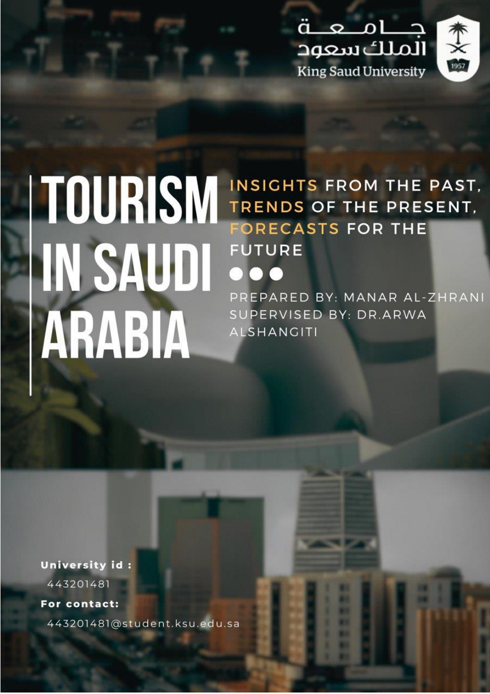

Tourism in Saudi Arabia: Insights, Trends and Forecasts
A statistical study of inbound tourism in Riyadh, Makkah, and the Eastern Province using monthly data from 2015–2023, with forecasts for 2024 and 2025.
- Applied time-series diagnostics including ADF, KPSS, ARCH, ACF, PACF, Ljung–Box, and residual analysis.
- Built regional SARIMA/SARIMAX forecasting models and used a COVID-19 dummy variable for Makkah.
- Handled missing data using Kalman-filter-based imputation and evaluated forecasts with rolling validation and MAPE.
- Produced analytical visuals and dashboards using R, Excel, and Power BI.